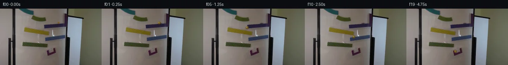

![首帧]()

Round 00
2026-11-05T05:54:32.950883+00:00像素候选变化代码 +192/−0inspection 更新
pixels 58e73c5875e7d09c · code 0d8269e520752c54
查看本轮 generate.py 真实 diff
--- previous/generate.py
+++ current/generate.py
@@ -0,0 +1,192 @@
+#!/usr/bin/env python3
+"""Generate the 20-frame PixelWorld continuation from local RGB pixels only."""
+
+from pathlib import Path
+
+import cv2
+import numpy as np
+from PIL import Image, ImageDraw, ImageFont
+
+import artifact_io
+
+
+ROOT = Path(__file__).resolve().parent
+SOURCE = np.asarray(Image.open(ROOT / "first_frame.png").convert("RGB"), dtype=np.uint8)
+
+# Hand-measured from numeric RGB/HSV inspection of the compact yellow component.
+MARBLE_CENTERS = [
+ (146.0, 36.0),
+ (145.0, 36.2),
+ (138.2, 37.7),
+ (127.3, 40.0),
+ (115.3, 43.0),
+ (110.4, 48.0),
+ (110.3, 53.5),
+ (114.0, 56.6),
+ (120.0, 60.2),
+ (123.0, 65.0),
+ (123.2, 71.7),
+ (124.0, 75.8),
+ (120.1, 77.8),
+ (115.0, 80.1),
+ (112.2, 84.8),
+ (112.0, 89.0),
+ (115.0, 91.0),
+ (119.0, 94.0),
+ (121.0, 100.0),
+ (123.0, 109.0),
+]
+
+# Frames where the marble is supported by a ramp rather than in free flight.
+ON_RAMP = {1, 2, 3, 4, 6, 7, 8, 11, 12, 13, 15, 16, 17}
+
+
+def make_clean_plate() -> np.ndarray:
+ """Remove only the source marble footprint with a tiny local RGB inpaint."""
+ mask = np.zeros(SOURCE.shape[:2], dtype=np.uint8)
+ # The source object is an approximately 8x6 warm disc immediately above
+ # the upper ramp. This ellipse deliberately stops before ramp texture.
+ cv2.ellipse(mask, (147, 36), (5, 4), 0, 0, 360, 255, -1)
+ # Telea interpolation uses only neighboring pixels and reconstructs the
+ # smooth board-to-ramp boundary beneath the translucent source marble.
+ return cv2.inpaint(SOURCE, mask, 3.0, cv2.INPAINT_TELEA)
+
+
+def alpha_over(dst: np.ndarray, color: np.ndarray, alpha: np.ndarray) -> None:
+ """In-place floating-point alpha composite."""
+ dst[:] = dst * (1.0 - alpha[..., None]) + color * alpha[..., None]
+
+
+def render_marble(frame: np.ndarray, center, frame_index: int, velocity) -> np.ndarray:
+ """Composite a small shaded, translucent yellow glass marble."""
+ cx, cy = center
+ vx, vy = velocity
+ speed = float(np.hypot(vx, vy))
+
+ # A very small contact shadow locks the sphere to each ramp. It is absent
+ # in the four free-fall intervals.
+ if frame_index in ON_RAMP:
+ x0, x1 = max(0, int(cx - 7)), min(256, int(cx + 8))
+ y0, y1 = max(0, int(cy)), min(144, int(cy + 7))
+ yy, xx = np.mgrid[y0:y1, x0:x1]
+ shadow = np.exp(-(((xx - cx) / 4.4) ** 2 + ((yy - (cy + 3.4)) / 1.35) ** 2))
+ shadow_alpha = (0.20 * shadow).astype(np.float32)
+ work = frame[y0:y1, x0:x1].astype(np.float32)
+ alpha_over(work, np.array([27.0, 23.0, 16.0], np.float32), shadow_alpha)
+ frame[y0:y1, x0:x1] = np.clip(work, 0, 255).astype(np.uint8)
+
+ # Limit drawing to a compact patch. Slight velocity-aligned stretching is
+ # capped well below a pixel and reads as photographic shutter softness.
+ radius = 3.75
+ x0, x1 = max(0, int(np.floor(cx - 6))), min(256, int(np.ceil(cx + 7)))
+ y0, y1 = max(0, int(np.floor(cy - 6))), min(144, int(np.ceil(cy + 7)))
+ yy, xx = np.mgrid[y0:y1, x0:x1]
+ if speed > 1e-5:
+ ux, uy = vx / speed, vy / speed
+ else:
+ ux, uy = 1.0, 0.0
… diff truncated; 105 more lines …